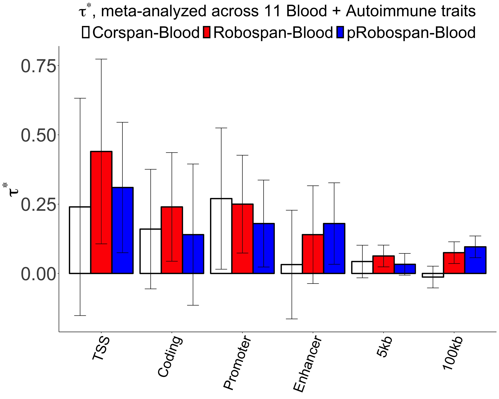
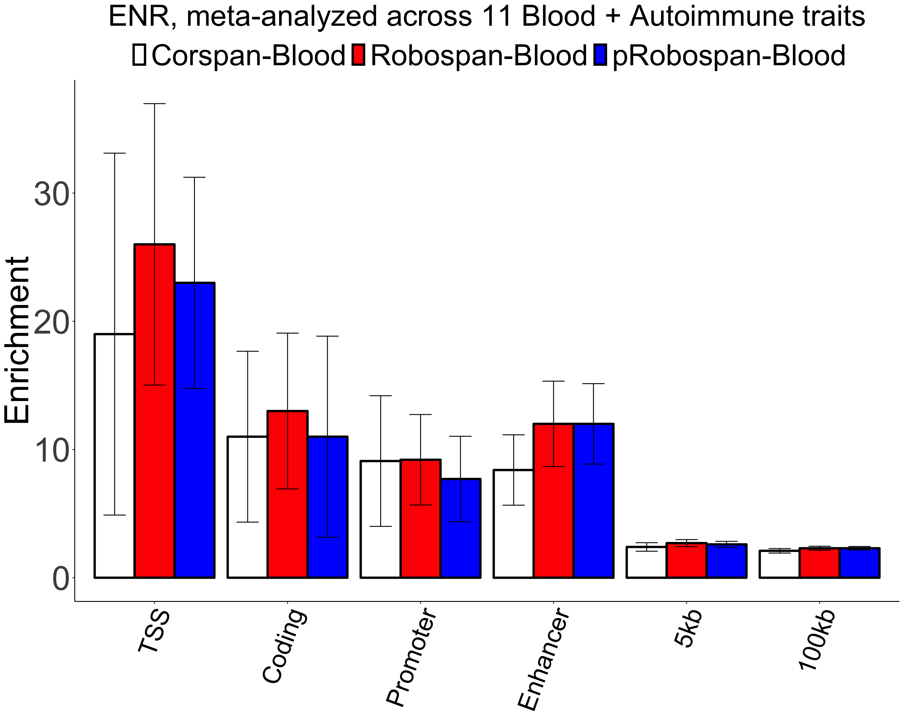

Last updated: 2019-11-27
workflowr checks: (Click a bullet for more information) ✖ R Markdown file: uncommitted changes
The R Markdown is untracked by Git. To know which version of the R Markdown file created these results, you’ll want to first commit it to the Git repo. If you’re still working on the analysis, you can ignore this warning. When you’re finished, you can run wflow_publish to commit the R Markdown file and build the HTML.
✔ Environment: empty
Great job! The global environment was empty. Objects defined in the global environment can affect the analysis in your R Markdown file in unknown ways. For reproduciblity it’s best to always run the code in an empty environment.
✔ Seed:
set.seed(20190721)
The command set.seed(20190721) was run prior to running the code in the R Markdown file. Setting a seed ensures that any results that rely on randomness, e.g. subsampling or permutations, are reproducible.
✔ Session information: recorded
Great job! Recording the operating system, R version, and package versions is critical for reproducibility.
✔ Repository version: 47185fd
wflow_publish or wflow_git_commit). workflowr only checks the R Markdown file, but you know if there are other scripts or data files that it depends on. Below is the status of the Git repository when the results were generated:
Ignored files:
Ignored: .DS_Store
Ignored: .Rhistory
Ignored: .Rproj.user/
Ignored: docs/.DS_Store
Untracked files:
Untracked: analysis/band_prec_robocov.Rmd
Untracked: analysis/blood_corspan_robospan_probospan.Rmd
Untracked: analysis/corspan_robospan_probospan.Rmd
Untracked: analysis/eigenvalues_hub.Rmd
Untracked: analysis/figure2.Rmd
Untracked: analysis/gtex_pRobocov_pRobospan.Rmd
Untracked: analysis/gtex_predictive_robocov.Rmd
Untracked: analysis/gtex_rank_imputation.Rmd
Untracked: analysis/gtex_robocov.Rmd
Untracked: analysis/gtex_robocov_ex_robospan.Rmd
Untracked: analysis/hub_robocov.Rmd
Untracked: analysis/pLI_shet_robospan_probospan.Rmd
Untracked: analysis/predictive_analytics_gtex.Rmd
Untracked: analysis/robocov_blood_compare.Rmd
Untracked: analysis/robospan_blood_compare.Rmd
Untracked: analysis/robospan_corr.Rmd
Untracked: analysis/summary_correlation_structure.Rmd
Untracked: analysis/supp_figure_simulation.Rmd
Untracked: analysis/toeplitz_robocov.Rmd
Untracked: code/ robocov_sim.R
Untracked: code/FDR_Robospan.R
Untracked: code/Joints_Nov24.R
Untracked: code/Untitled.R
Untracked: code/band_prec_ocor_sim.R
Untracked: code/band_prec_pcor_sim.R
Untracked: code/band_prec_sim.R
Untracked: code/band_prec_sim2.R
Untracked: code/bandprec_cor_sim.R
Untracked: code/baseline_strategies.R
Untracked: code/corr_span.R
Untracked: code/gene_score_all_strategies.R
Untracked: code/gtex_robocov.R
Untracked: code/gtex_robocov_precision.R
Untracked: code/hub_prec_cor_sim.R
Untracked: code/hub_sim.R
Untracked: code/hub_sim2.R
Untracked: code/hub_sim_sparse.R
Untracked: code/many_tau_star.R
Untracked: code/maxHiCgene.R
Untracked: code/meta_enrich.R
Untracked: code/meta_single_enrich.R
Untracked: code/postprocess_hub_toeplitz.R
Untracked: code/predictive_analytics_hub.R
Untracked: code/predictive_analytics_toeplitz.R
Untracked: code/robocov_gtex.R
Untracked: code/robocov_gtex_blood.R
Untracked: code/robocov_gtex_brain.R
Untracked: code/sim_results.R
Untracked: code/single_tau_star.R
Untracked: code/toeplitz_prec_cor_sim.R
Untracked: code/toeplitz_sim.R
Untracked: code/toeplitz_sim2.R
Untracked: code/toeplitz_sim_sparse.R
Untracked: data/Cor_pairwise_all_genes.rda
Untracked: data/Gene_Scores/
Untracked: data/Robocov_Box_all_genes.rda
Untracked: data/Robocov_Precision_all_genes.rda
Untracked: data/gene_names_GTEX_V6.txt
Untracked: data/housekeeping_genes.txt
Untracked: data/person_tissue_genes_voom.rda
Untracked: docs/figure/
Untracked: draft/
Untracked: output/Cor_pairwise_all_genes.rda
Untracked: output/Robocov_all_genes.rda
Untracked: output/gtex_predictive_robocov.rda
Untracked: output/output_sparse/
Untracked: output/robocov_sim_bandprec_n_100_p_100_prop_0.25.rda
Untracked: output/robocov_sim_bandprec_n_100_p_100_prop_0.5.rda
Untracked: output/robocov_sim_bandprec_n_100_p_100_prop_0.rda
Untracked: output/robocov_sim_bandprec_n_200_p_100_prop_0.25.rda
Untracked: output/robocov_sim_bandprec_n_200_p_100_prop_0.5.rda
Untracked: output/robocov_sim_bandprec_n_200_p_100_prop_0.rda
Untracked: output/robocov_sim_bandprec_n_50_p_100_prop_0.25.rda
Untracked: output/robocov_sim_bandprec_n_50_p_100_prop_0.5.rda
Untracked: output/robocov_sim_bandprec_n_50_p_100_prop_0.rda
Untracked: output/robocov_sim_hub_n_100_p_100_prop_0.25.rda
Untracked: output/robocov_sim_hub_n_100_p_100_prop_0.5.rda
Untracked: output/robocov_sim_hub_n_100_p_100_prop_0.rda
Untracked: output/robocov_sim_hub_n_200_p_100_prop_0.25.rda
Untracked: output/robocov_sim_hub_n_200_p_100_prop_0.5.rda
Untracked: output/robocov_sim_hub_n_200_p_100_prop_0.75.rda
Untracked: output/robocov_sim_hub_n_200_p_100_prop_0.rda
Untracked: output/robocov_sim_hub_n_50_p_100_prop_0.25.rda
Untracked: output/robocov_sim_hub_n_50_p_100_prop_0.rda
Untracked: output/robocov_sim_toeplitz_n_100_p_100_prop_0.25.rda
Untracked: output/robocov_sim_toeplitz_n_100_p_100_prop_0.5.rda
Untracked: output/robocov_sim_toeplitz_n_100_p_100_prop_0.rda
Untracked: output/robocov_sim_toeplitz_n_200_p_100_prop_0.25.rda
Untracked: output/robocov_sim_toeplitz_n_200_p_100_prop_0.5.rda
Untracked: output/robocov_sim_toeplitz_n_200_p_100_prop_0.rda
Untracked: output/robocov_sim_toeplitz_n_50_p_100_prop_0.25.rda
Untracked: output/robocov_sim_toeplitz_n_50_p_100_prop_0.5.rda
Untracked: output/robocov_sim_toeplitz_n_50_p_100_prop_0.rda
Here we present S-LDSC results for blood-specific Corspan, Robospan and pRobospan gene prioritizations.
library(data.table)
library(ggplot2)Warning: package 'ggplot2' was built under R version 3.5.2library(latex2exp)
require(gridExtra)Loading required package: gridExtralibrary(xtable)Warning: package 'xtable' was built under R version 3.5.2scaleFUN <- function(x) sprintf("%.1f", x)tau1 = c(0.24, 0.16, 0.27, 0.032, 0.043, -0.013)
taus1 = c(0.20, 0.11, 0.13, 0.10, 0.03, 0.02)
tau2 = c(0.44, 0.24, 0.25, 0.14, 0.063, 0.075)
taus2 = c(0.17, 0.1, 0.09, 0.09, 0.02, 0.02)
tau3 = c(0.31, 0.14, 0.18, 0.18, 0.033, 0.096)
taus3 = c(0.12, 0.13, 0.08, 0.075, 0.02, 0.02)
annots_pre = c("TSS", "Coding", "Promoter", "Enhancer", "5kb", "100kb")
annots = factor(rep(annots_pre, 3), levels = annots_pre)
model = factor(c(rep("Corspan-Blood",6), rep("Robospan-Blood",6), rep("pRobospan-Blood", 6)),
levels = c("Corspan-Blood", "Robospan-Blood", "pRobospan-Blood"))
df = data.frame(tau = c(tau1, tau2, tau3),
tau_sd = c(taus1, taus2, taus3),
class_annots = model,
model = model,
annots = annots)
colors2 = rep("black", 18)
colors2[1:5] = "white"
colors2[6:10] = "red"
colors2[11:15] = "blue"
p3 = ggplot(df, aes(x=annots, y=tau, fill=df$model)) +
geom_bar(position="dodge", stat="identity", colour = "black", size = 1.3) +
geom_errorbar(aes(ymin=tau-1.96*tau_sd, ymax=tau+1.96*tau_sd),
width=.5,
position = position_dodge(.9)) +
guides(fill=guide_legend(title="")) +
labs(x = "", y = TeX('$\\tau^ *$')) +
theme(axis.title.x = element_text(size=1)) +
scale_fill_manual(values=c("white", "red", "blue")) +
scale_color_manual(values=c("white", "red", "blue")) +
theme(axis.text.x = element_text(angle = 70, hjust = 1, size = 30,
color="black"), legend.position="top") +
scale_alpha_continuous(range(0,1), guide = FALSE) +
ggtitle(TeX('$\\tau^ *$, meta-analyzed across 11 Blood + Autoimmune traits')) +
theme(plot.title = element_text(size = 35, face = "bold", hjust = 0.5)) +
theme(legend.text=element_text(size=35)) +
theme(axis.title.y = element_text(size = 40)) + theme(axis.text.y = element_text(size = 40)) +
theme(panel.background = element_blank(), axis.line = element_line(colour = "black"))
p3 
tau1 = c(19, 11, 9.1, 8.4, 2.4, 2.1)
taus1 = c(7.2, 3.4, 2.6, 1.4, 0.17, 0.09)
tau2 = c(26, 13, 9.2, 12, 2.7, 2.3)
taus2 = c(5.6, 3.1, 1.8, 1.7, 0.14, 0.08)
tau3 = c(23, 11, 7.7, 12, 2.6, 2.3)
taus3 = c(4.2, 4, 1.7, 1.6, 0.12, 0.07)
annots_pre = c("TSS", "Coding", "Promoter", "Enhancer", "5kb", "100kb")
annots = factor(rep(annots_pre, 3), levels = annots_pre)
model = factor(c(rep("Corspan-Blood",6), rep("Robospan-Blood",6), rep("pRobospan-Blood", 6)),
levels = c("Corspan-Blood", "Robospan-Blood", "pRobospan-Blood"))
df = data.frame(tau = c(tau1, tau2, tau3),
tau_sd = c(taus1, taus2, taus3),
class_annots = model,
model = model,
annots = annots)
colors2 = rep("black", 18)
colors2[1:5] = "white"
colors2[6:10] = "red"
colors2[11:15] = "blue"
p3 = ggplot(df, aes(x=annots, y=tau, fill=df$model)) +
geom_bar(position="dodge", stat="identity", colour = "black", size = 1.3) +
geom_errorbar(aes(ymin=tau-1.96*tau_sd, ymax=tau+1.96*tau_sd),
width=.5,
position = position_dodge(.9)) +
guides(fill=guide_legend(title="")) +
labs(x = "", y = TeX('Enrichment')) +
theme(axis.title.x = element_text(size=1)) +
scale_fill_manual(values=c("white", "red", "blue")) +
scale_color_manual(values=c("white", "red", "blue")) +
theme(axis.text.x = element_text(angle = 70, hjust = 1, size = 30,
color="black"), legend.position="top") +
scale_alpha_continuous(range(0,1), guide = FALSE) +
ggtitle(TeX('ENR, meta-analyzed across 11 Blood + Autoimmune traits')) +
theme(plot.title = element_text(size = 35, face = "bold", hjust = 0.5)) +
theme(legend.text=element_text(size=35)) +
theme(axis.title.y = element_text(size = 40)) + theme(axis.text.y = element_text(size = 40)) +
theme(panel.background = element_blank(), axis.line = element_line(colour = "black"))
p3 
sessionInfo()R version 3.5.1 (2018-07-02)
Platform: x86_64-apple-darwin15.6.0 (64-bit)
Running under: macOS High Sierra 10.13.6
Matrix products: default
BLAS: /Library/Frameworks/R.framework/Versions/3.5/Resources/lib/libRblas.0.dylib
LAPACK: /Library/Frameworks/R.framework/Versions/3.5/Resources/lib/libRlapack.dylib
locale:
[1] en_US.UTF-8/en_US.UTF-8/en_US.UTF-8/C/en_US.UTF-8/en_US.UTF-8
attached base packages:
[1] stats graphics grDevices utils datasets methods base
other attached packages:
[1] xtable_1.8-4 gridExtra_2.3 latex2exp_0.4.0 ggplot2_3.1.1
[5] data.table_1.11.8
loaded via a namespace (and not attached):
[1] Rcpp_1.0.1 compiler_3.5.1 pillar_1.3.1
[4] git2r_0.23.0 plyr_1.8.4 workflowr_1.1.1
[7] R.methodsS3_1.7.1 R.utils_2.7.0 tools_3.5.1
[10] digest_0.6.19 evaluate_0.12 tibble_2.1.1
[13] gtable_0.3.0 pkgconfig_2.0.2 rlang_0.3.4
[16] yaml_2.2.0 withr_2.1.2 stringr_1.4.0
[19] dplyr_0.8.0.1 knitr_1.20 rprojroot_1.3-2
[22] grid_3.5.1 tidyselect_0.2.5 glue_1.3.1
[25] R6_2.4.0 rmarkdown_1.10 purrr_0.3.2
[28] magrittr_1.5 whisker_0.3-2 backports_1.1.4
[31] scales_1.0.0 htmltools_0.3.6 assertthat_0.2.1
[34] colorspace_1.4-1 labeling_0.3 stringi_1.4.3
[37] lazyeval_0.2.2 munsell_0.5.0 crayon_1.3.4
[40] R.oo_1.22.0 This reproducible R Markdown analysis was created with workflowr 1.1.1